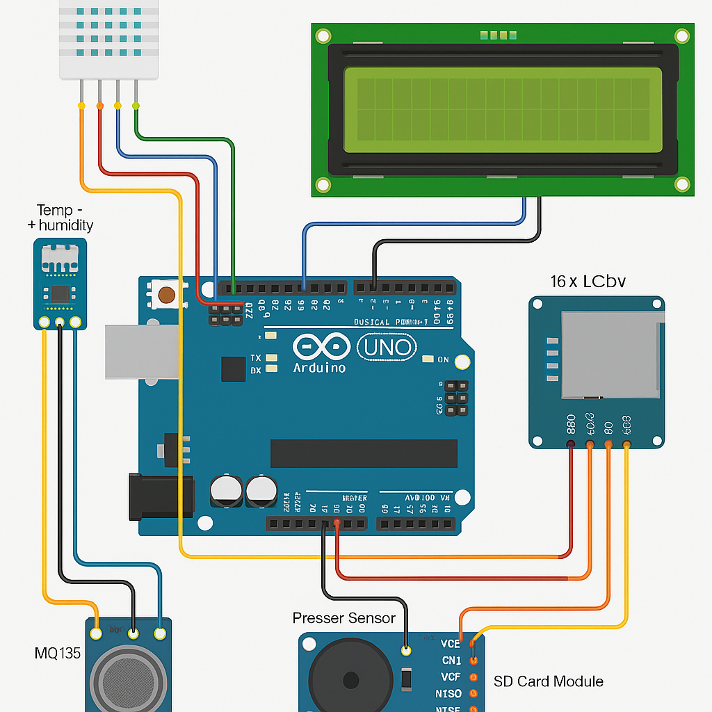

Problem
Çevresel verilerin tek bir prototip üzerinde toplanması, görüntülenmesi ve ileride analiz edilebilecek şekilde kayıt altına alınması amaçlanmıştır.
Sistem Mimarisi
Sistemde farklı sensörlerden gelen veriler Arduino tarafından okunur. Veriler ekrana aktarılır ve depolama modülü üzerinden kayıt altına alınabilir. Böylece temel bir veri toplama sistemi kurulmuş olur.
Çalışma Mantığı
Sensörlerden sıcaklık, nem, basınç ve hava kalitesi bilgisi alınır.
Okunan değerler yazılımda anlamlı bir formata dönüştürülür.
Anlık ölçümler LCD ekran üzerinden kullanıcıya sunulur.
Veriler analiz için depolama modülüne aktarılabilecek yapıdadır.
Görseller


Geliştirme Notları
Bu proje, çoklu sensör okuma ve veri düzenleme konusunda temel bir mühendislik pratiği sağlar. Özellikle akıllı tarım, çevresel izleme ve veri toplama sistemleri için geliştirilebilir bir altyapı sunar.
Gelecek Geliştirmeler
- Daha kararlı MQ135 kalibrasyonu
- Web dashboard entegrasyonu
- Grafiksel veri analizi
- Kablosuz veri aktarımı